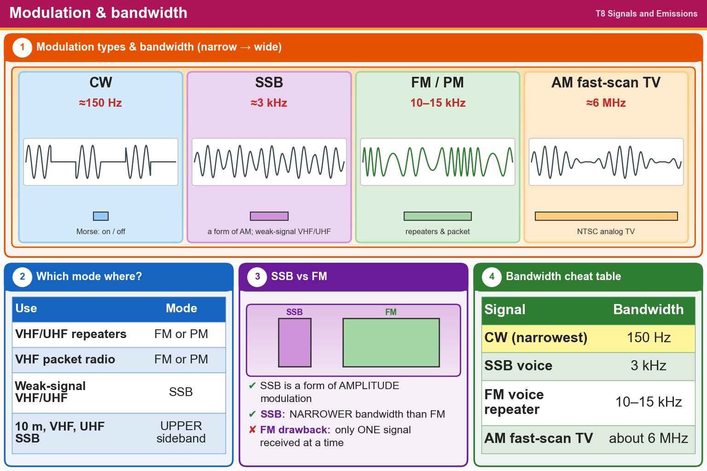

💡 Narrow to wide: CW about 150 Hz, SSB about 3 kHz, FM 10–15 kHz, TV about 6 MHz. Repeaters use FM. SSB = a form of AM.
Press Check on any question to see if you're right (it won't show the answer), or Grade at the bottom to grade the whole page.
T8A01
Which of the following is a form of amplitude modulation?
✔A.Single sideband
✘B.Phase shift keying (PSK)
✘C.Packet radio
✘D.Spread spectrum
T8A02
What type of modulation is commonly used for VHF packet radio transmissions?
✔A.FM or PM
✘B.SSB
✘C.AM
✘D.PSK
T8A04
Which type of modulation is commonly used for VHF and UHF voice repeaters?
✘A.AM
✘B.PSK
✘C.SSB
✔D.FM or PM
T8A03
Which type of voice mode is often used for long-distance (weak signal) contacts on the VHF and UHF bands?
✘A.PM
✔B.SSB
✘C.FM
✘D.DRM
T8A06
Which sideband is normally used for 10-meter HF, VHF, and UHF single-sideband communications?
✘A.Inverted sideband
✔B.Upper sideband
✘C.Suppressed sideband
✘D.Lower sideband
T8A07
What is one characteristic of single sideband (SSB) compared to FM?
✔A.SSB signals have narrower bandwidth
✘B.SSB signals are easier to tune in correctly
✘C.SSB signals are less susceptible to high SWR
✘D.SSB signals are less susceptible to interference
T8A12
Which of the following is a disadvantage of FM compared with single sideband?
✘A.FM signals are more susceptible to high SWR
✘B.FM signals are harder to tune
✔C.Only one signal can be received at a time
✘D.Voice quality is poorer
T8A05
Which of the following signal types has the narrowest bandwidth?
✘A.Slow-scan TV
✘B.SSB voice
✘C.FM voice
✔D.CW
T8A11
What is the approximate bandwidth required to transmit a CW signal?
✘A.15 kHz
✔B.150 Hz
✘C.2.4 kHz
✘D.1000 Hz
T8A08
What is the approximate bandwidth of a typical single sideband (SSB) voice signal?
✘A.1 kHz
✘B.6 kHz
✔C.3 kHz
✘D.15 kHz
T8A09
What is the approximate bandwidth of an FM voice signal on VHF repeaters?
✘A.About 150 kHz
✘B.Less than 500 Hz
✘C.Between 50 and 125 kHz
✔D.Between 10 and 15 kHz
T8A10
What is the approximate bandwidth of AM fast-scan TV transmissions?
✔A.About 6 MHz
✘B.More than 10 MHz
✘C.About 3 MHz
✘D.About 1 MHz